简述： 提升方法（boosting）是一种常用的统计学习方法，应用广泛且有效。在分类问题中，它通过改变训练样本的权重，学习多个分类器，并将这些分类器进行线性组合，提高分类的性能。
boosting基本思路： boosting基于这样一种思想：对于一个复杂任务来说，将多个专家的判断进行适当的综合所得出的判断，要比其中任何一个专家单独的判断好。实际上就是“三个臭皮匠，顶个诸葛亮”的道理。
强可学习： 在概率近似正确（probably approximately correct，PAC）学习的框架中，一个概念（一个类），如果存在一个多项式的学习算法能够学习它，并且正确率很高，那么称这个概念是强可学习的。
弱可学习： 一个概念，如果存在一个多项式的学习算法能够学习它，学习的正确率仅比随机猜测略好，那么称为弱可学习的。
强可学习和弱可学习： Schapire证明了强可学习与弱可学习是等价的，也就是说，在PAC学习的框架下，一个概念是强可学习的充要条件是这个概念是弱可学习的。
这样一来，问题便成为，在学习中，如果已经发现了“弱学习算法”，那么能够将它提升（boost）为“强学习算法”。大家知道，发现弱学习算法通常要比发现强学习算法容易的多。那么如何具体实施提升，便成为开发提升方法时所要解决的问题。关于提升方法的研究很多，有很多算法被提出。最具代表性的是 AdaBoosting 算法。
对于分类问题而言，给定一个训练样本集，求比较粗躁的分类规则（弱分类器）要比求精确的分类规则（强分类器）容易的多。提升方法就是从弱学习算法出发，反复学习，得到一系列弱分类器（又称为基本分类器），然后组合这些弱分类器，构成一个强分类器。大多数的提升方法都是改变训练数据的概率分布（训练数据的权值分布），针对不同的训练数据分布调用弱学习算法学习一系列弱分类器。
这样，对提升方法来说，有两个问题需要回答：一是在每一轮如何改变训练数据的权值或概率分布；二是如何将弱分类器组合成一个强分类器。关于第 1 个问题，AdaBoost 的做法是，提高那些被前一轮弱分类器错误分类样本的权值，而降低那些被正确分类样本的权值。这样一来，那些没有得到正确分类的数据，由于其权值的加大而受到后一轮的弱分类器的更大的关注。于是，分类问题被一系列的弱分类器“分而治之”。至于第 2 个问题，即弱分类器的组合，AdaBoost 采取加权多数表决的方法。具体地，加大分类误差率小的弱分类器的权值，使其在表决中起较大的作用，减小分类误差率大的弱分类器的权值，使其在表决中起较小的作用。
AdaBoost 的巧妙之处就在于它将这些想法自然且有效地实现在一种算法里。
在开始正式的内容（书上的内容）之前，建议先学习如下内容：
boosting 图示：
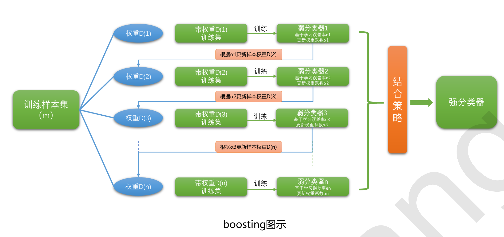
然后观看视频【reference】中的【AdaBoost.mp4】（重点看那个例子（与书中的例子一致））。
上述内容学习之后继续下面内容的学习。
AdaBoost算法：
输入：训练数据集T={(x1,y1),(x2,y2),⋯,(xN,yN)}，其中xi∈X⊆Rn,yi∈Y={+1,−1},i=1,2,⋯,N；弱学习算法
输出：分类器G(x)
- 初始化训练数据的权值分布
D1=(w11,w12,⋯,w1N),w1i=N1,i=1,2,⋯,N
该式中的 i=1,2,⋯,N 表示的是有 N 个训练数据，每个 w 就代表一个训练样本数据前面的一个权重值。w 中的 1 表示是第一轮循环。
- 对m=1,2,⋯,M
2.1 使用具有权值分布Dm的训练数据集学习，得到基本分类器
Gm(x):X→{−1,+1}
用更新后的权重值及对应的训练样本数据训练出一个基本分类器。
2.2 计算Gm(x)在训练数据集上的分类误差率
em=P(Gm(xi)=yi)=i=1∑NwmiI(Gm(xi)=yi)
得到该基本分类器在训练数据上的误差率。
2.3 计算Gm(x)的系数
αm=21logem1−em
这里的对数是自然对数。
根据该基本分类器在训练数据上的误差率，来得到该基本分类器在最终分类器中所占的比重，也就是该基本分类器前面的系数 α。（自然是在训练数据上的误差率越大，其所占的比重就会越小；反之。）
除此之外，上式还有一个性质就是，因为 em 一定是小于等于 1/2 的，所以 αm 一定是大于等于 0 的。
2.4 更新训练数据集的权值分布
Dm+1=(wm+1,1,⋯,wm+1,i,⋯,wm+1,N)wm+1,i=Zmwmiexp(−αmyiGm(xi)),=⎩⎪⎪⎨⎪⎪⎧ Zmwmiexp(−αm),Gm(xi)=yiZmwmiexp(αm),Gm(xi)=yii=1,2,⋯,N
其中，Zm是规范化因子
Zm＝i=1∑Nwmiexp(−αmyi,Gm(xi))
它使 Dm+1 成为一个概率分布。
对训练数据前面的系数进行更新。从上式可以看到，当该样本数据在当前基本分类器中被正确分类（也就是 Gm(xi)=yi），则该样本数据前面的系数会由 wmi 变为 wmiexp(−αm)（先忽略规范化因子 Zm，因为所有系数的归一化因子都一样。）；该样本数据在当前基本分类器中未被正确分类（也就是 Gm(xi)=yi），则该样本数据前面的系数会由 wmi 变为 wmiexp(αm)。
因为 α 一定是大于等于 0 的；所以参考下面的图片可以知道，当该样本数据在当前基本分类器中被正确分类（也就是 Gm(xi)=yi）时，由 e−x 可知，该系数会变为比 wmi 更小的一个值（因为小于 1）；当该样本数据在当前基本分类器中未被正确分类（也就是 Gm(xi)=yi）时，由 ex 可知，该系数会变为比 wmi 更大的一个值（因为大于 1）。所以结果就是，未被分类的样本数据前的系数变大，被正确分类的样本数据前的系数变小。并且 α 越大，它们变化的力度也越大。
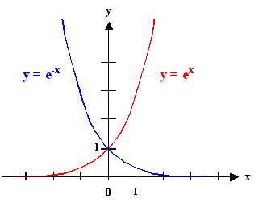
- 构建基本分类器的线性组合
f(x)=m=1∑MαmGm(x)
得到最终分类器
G(x)=sign(f(x))=sign(m=1∑MαmGm(x))
对 AdaBoost 算法作如下说明：
步骤1 假设训练数据集具有均匀的权值分布，即每个训练样本在基本分类器的学习中作用相同，这一假设保证第 1 步能够在原始数据上学习基本分类器 G1(x)。
步骤2 AdaBoost 反复学习基本分类器，在每一轮 m=1,2,...,M 顺次地执行下列操作：
a 使用当前分布 Dm 加权的训练数据集，学习基本分类器 Gm(x)。
b 计算基本分类器 Gm(x) 在加权训练数据集上的分类误差率：
em=P(Gm(xi)=yi)=Gm(xi)=yi∑wmi
这里，wmi 表示第 m 轮中第 i 个实例的权值，∑i=1Nwmi=1。这表明，Gm(x) 在加权的训练数据集上的分类误差率是被 Gm(x) 误分类样本的权值之和，由此可以看出数据权值分布 Dm 与基本分类器 Gm(x) 的分类误差率的关系。
c 计算基本分类器件 Gm(x) 的系数 αm。αm 表示 Gm(x) 在最终分类器中的重要性。由 αm=21logem1−em 可知，当 em⩽21 时，αm⩾0，并且 αm 随着 em 的减小而增大，所以分类误差越小的基本分类器在最终分类器中的作用越大。
d 更新训练数据集的权值分布为下一轮作准备。式 wm+1,i=Zmwmiexp(−αmyiGm(xi)),i=1,2,⋯,N 可以改写为：
wm+1,i={Zmwmie−αm,Zmwmieαm,Gm(xi)=yiGm(xi)=yi
由此可知，被基本分类器 Gm(x) 误分类样本的权值得以扩大，而被正确分类样本的权值却得以缩小。两相比较，误分类样本的权值被放大 e2αm=1−emem 倍。因此，误分类样本在下一轮学习中起更大的作用。不改变所给的训练数据，而不断改变训练数据权值的分布，使得训练数据在基本分类器的学习中起不同的作用，这是 AdaBoost 的一个特点。
步骤 3 线性组合 f(x) 实现 M 个基本分类器的加权表决。系数 αm 表示了基本分类器 Gm(x) 的重要性，这里，所有 αm 之和并不为 1。f(x) 的符号决定实例 x 的类，f(x) 的绝对值表示分类的确信度。利用基本分类器的线性组合构建最终分类器是 AdaBoost 的另一特点。
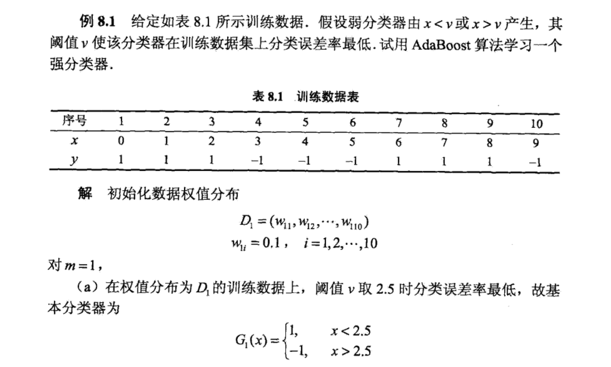
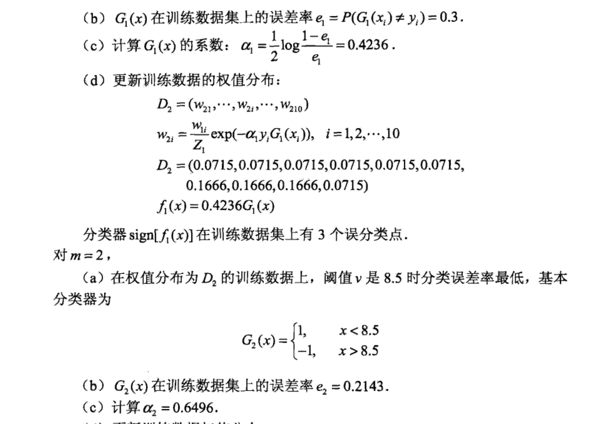
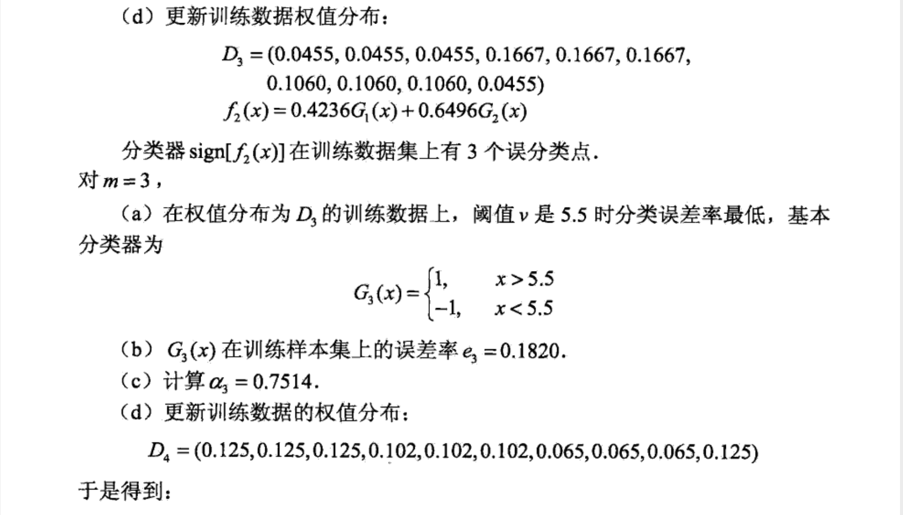
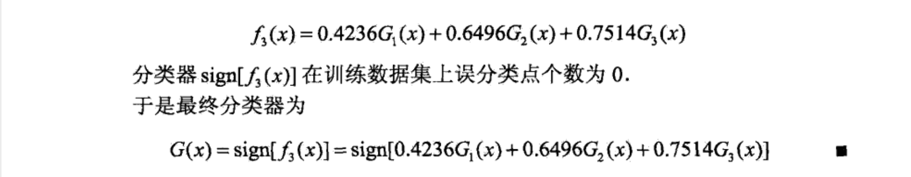
如果还想查看更详细的内容，可查看Adaboost算法原理分析和实例+代码（简明易懂）。
该部分内容可查看书籍对应内容；及【reference】中的【Adaboost训练误差.mp4】视频。
在学习正式内容（书籍）前，建议先学习以下内容（很不错）。
AdaBoost算法的一种等价解释：即可以认为AdaBoost算法是模型为加法模型、损失函数为指数函数、学习算法为前向分步算法时的二类分类学习方法。（统计学习方法的三要素：模型、策略、算法）
我们先忘掉前面所有有关AdaBoost算法的函数及符号的含义，重新用普通符号先来理解一下什么是前向分步算法。然后我们再来理解AdaBoost算法就会发现，由前向分步算法就可以推导出AdaBoost~，这样我们就能理解这种“等价解释”了。
1.前向分步算法
补充：
一般来说：
在给定训练数据和损失函数 L(y,f(x)) 的条件下，学习加法模型 f(x) 成为经验风险极小化(即损失函数极小化问题)：
βm,γmmini=1∑NL(yi,m=1∑Mβmb(xi;γm))
这里是要最小化每一步生成的基函数的损失函数之和。
但是！这通常是一个很复杂的问题，因此提出前向分步算法的思想：
前向分步算法求解这一优化问题的想法是：由于学习的是加法模型，如果能从前向后每一步只学习一个基函数及其系数，逐步逼近优化目标函数式，即 βm,γmmini=1∑NL(yi,m=1∑Mβmb(xi;γm))，那么就可以简化优化的复杂度。因此每步我们只需要优化 β,γmini=1∑NL(yi,βb(xi;γ)) 即可。
也就是说我每次学习一个基函数(基分类器)，我只针对这个基分类器进行优化，使其损失函数最小。
考虑加法模型（additive model）：f(x)=∑m=1Mβmb(x;γm)，其中，b(x;γm) 是基函数，γm 是基函数的参数，βm 是基函数的系数。
（这个式子即M个项相加，我们就称它加法模型~）
如果我们给定了训练数据集和模型的损失函数 L(y,f(x))，那么我们就可以把加法模型 f(x) 的学习过程转化为一个经验风险极小化问题（即损失函数极小化问题）：
βm,γmmini=1∑NL(yi,m=1∑Mβmb(xi;γm))(1−1)
（口头解释一下上面这个损失函数极小化问题：现在我们有一堆训练数据，我们的终极目标是通过这些数据找到一个能将训练数据最大程度正确分类的模型（这个模型还是加法模型~）。而且我们是通过损失函数来计算模型对每一个样本分类的准确度，通过不断地调整模型参数，最终我们能够得到一个最优模型，使得对训练数据的经验损失最小）
但通常这是个很复杂的优化问题，特别是当基函数的个数很多时，要得到最优最理想的那个模型其实很难。这个时候我们就想到了前向分步算法（forward stagewise algorithm），它的求解思路是：我们把这个加法模型想象成一根链条，每一个环就是一个带系数的基函数，我们从链条的前端向后，每次只学习一个环即一个基函数及其系数。采用这样的方式，逐步逼近最理想的优化目标函数——式1-1。可以看出来，前向加法模型仅仅是式1-1的一个近似，这样的好处就是大大地简化了优化的复杂度。也就是说，我们每次只需优化如下函数：
β,γmini=1∑NL(yi,βb(xi;γ))
下面我们给出具体算法流程：（很简单，认真看完肯定能明白~）
给定训练数据集 T={(x1,y1),(x2,y2),⋯,(xN,yN)}，损失函数L(y,f(x))；基函数集{b(x;γ)}。学习加法模型f(x) 的前向分布算法如下：
前向分布算法：
输入：训练数据集T={(x1,y1),(x2,y2),⋯,(xN,yN)}，损失函数L(y,f(x))；基函数集{b(x;γ)}
输出：加法模型f(x)
-
初始化f0(x)=0
-
对m=1,2,⋯,M
2.1 极小化损失函数
(βm,γm)=argβ,γmini=1∑NL(yi,fm−1(xi)+βb(xi;γ))
得到参数βm,γm
2.2 更新
fm(x)=fm−1(x)+βmb(x;γm)
更新迭代到 m=M。
- 得到加法模型
f(x)=fM(x)=m=1∑Mβmb(x;γm)
总结上述就一句话：前向分步算法将“同时求解从 m=1 到 M 所有参数 βm,γm ”的优化问题简化为了“逐次求解各个 βm,γm ”的优化问题。
2. 前向分步算法与AdaBoost
由前向分步算法可以推导出AdaBoost。 用以下定理来叙述这一推导：
定理： AdaBoost算法是前向分步加法算法的特例。这时，模型是由基本分类器组成的加法模型，损失函数是指数函数。
（为什么说是特例呢？因为当前向分步加法算法的损失函数为指数函数 exp[−yf(x)] 时，该加法算法的学习就等价于AdaBoost算法的学习）
证明： 从前几篇内容我们知道AdaBoost的最终分类器为 f(x)=∑m=1MαmG(x)。对比一下我们刚刚学习的前向分步算法的加法模型 f(x)=∑m=1Mβmb(x;γm)（是不是很像呢？），我们可以说，当基函数为基本分类器时，该加法模型等价于AdaBoost的最终分类器。
前向分步算法逐一学习基函数，这一过程与AdaBoost算法逐一学习基本分类器的过程是一致的。接下来关键就是证明——当前向分步算法的损失函数是指数函数（即 L(y,f(x))=exp[−yf(x)] ）时，其学习的具体操作等价于AdaBoost算法学习的具体操作。
假设经过 m−1 轮迭代前向分步算法已经得到 fm−1(x) :
fm−1(x)=fm−2(x)+αm−1Gm−1(x)=α1G1(x)+…+αm−1Gm−1(x)
在第 m 轮迭代得到 αm，Gm 和 fm(x) 。
fm(x)=fm−1(x)+αmGm(x)
目的是找到使 fm(x) 在训练数据集 T 上的损失函数最小的两个值——αm 和 Gm。即：
(αm,Gm(x))=argα,Gmini=1∑Nexp[−yi(fm−1(xi)+αG(xi))]
此式又可表示为：
(αm,Gm(x))=argα,Gmini=1∑Nωmi−exp[−yiαG(xi)](2−1)
其中，ωmi−=exp[−yifm−1(xi)]，既不依赖 α 也不依赖 G，所以与最小化无关。
现在证式2-1达到最小的 αm∗ 和 Gm∗(x) 就是 AdaBoost 算法所得到的 αm 和 Gm(x)。求解的过程可以分为两步：
第一步： 求 Gm∗(x)。
对任意 α>0，使式2-1最小的 Gm(x) 可由下式得到：
Gm∗(x)=argGmini=1∑Nωmi−I(yi=G(xi))
其中，ωmi−=exp[−yifm−1(xi)]。（此处 ωmi− 上加了一个横线，表示它还没有进行归一化，即没有除以一个规范化因子，但是对结果并没有影响~）
self ：
他这里没有给出具体为什么会是这样的原因。下面给出具体的原因：
可以参考参考视频中的内容。如下：
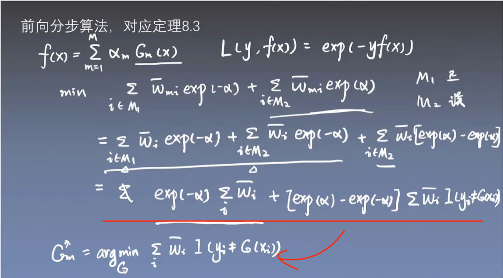
更清晰点的内容可见下：
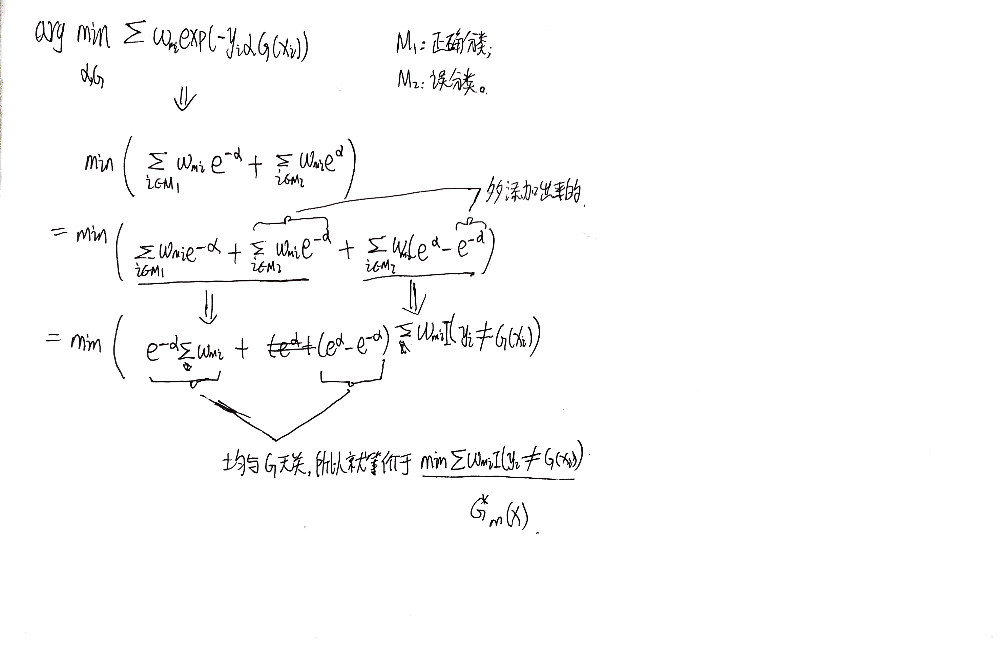
此时得到的分类器 Gm∗(x) 就是 AdaBoost 算法的基本分类器 Gm∗(x)，因为它是使第 m 轮加权训练数据分类误差率最小的基本分类器。
第二步： 求 αm∗。
参照上一篇关于误差分析的内容，有：
该部分后面有更详细的补充内容。
∑i=1Nωmi−exp[−yiαG(xi)]=∑yi=Gm(xi)ωmi−e−α+∑yi=Gm(xi)ωmi−eα=(eα−e−α)∑i=1Nωmi−I(yi=G(xi))+e−α∑i=1Nωmi−
（这一步其实就是上面图片中所示的内容。）
将第一步得到的 Gm∗(x) 带入上式，对 α 求导并使导数为 0，即得到使式2-1最小的 α。
αm∗=21logem1−em
其中，em 是分类误差率：
em=∑i=1Nωmi−∑i=1Nωmi−I(yi=Gm(xi))=i=1∑NωmiI(yi=Gm(xi))
（分式的分子和分母同时除以一个规范化因子，就能让分子的 ωmi− “摘掉帽子”，分母“等于1”）
这里的 αm∗ 与AdaBoost算法第2（c）步的完全一致。
最后来看每一轮的权值更新。由 fm(x)=fm−1(x)+αmGm(x) 和 ωmi−=exp[−yifm−1(xi)]，可得：
ωˉm+1,i=ωˉm,iexp[−yiαmGm(x)]
这与AdaBoost算法的样本权值的更新，只相差规范化因子，因而等价。
整个过程就是一些带来带去的公式推导，也没什么好说的，如果不想看那就记住最重要的结论（前述的那个定理）吧~
补充：
一、我们总目标是求 (αm,Gm(x))=argminα,G∑i=1Nωmi−exp[−yiαG(xi)]（即式2-1），现在我们已经得到了其中的 Gm(x)（即 Gm∗(x)），就剩下求 αm∗ 就大功告成了~
二、我们来解释解释下面这个式子（即式2-1）：
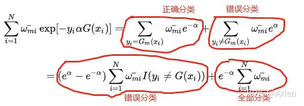
三、我们要清楚的是 ∑i=1Nωmi−I(yi=G(xi)) 和 ∑i=1Nωmi− 都是常数（前者是所有误分类点的权值之和；后者是所有点的权值之和，因为没有归一化，所以不一定等于1）。所谓“将第一步得到的基本分类器 Gm(x) 代入上式”，其实并不是要求你将具体代数式代入，只是说根据此分类器判断出所有误分类点，从而确定这两个常数。
四、将上式对 α 求导，并令其等于0。
((eα−e−α)i=1∑NωmiI(yi=G(xi))+e−αi=1∑Nωmi−)′=(eα+e−α)i=1∑Nωmi−I(yi=G(xi))−e−αi=1∑Nωmi−=0
等式两边同时除以 ∑i=1Nωmi−，并令 em=∑i=1Nωmi−∑i=1Nωmi−I(yi=Gm(xi))，得：
(eα+e−α)em−e−α=0⇒emeα=(1−em)e−α（两边同时取对数）⇒log(em)+α=log(1−em)−α
变换一下解得：
αm∗=21logem1−em
上述内容学习完成后，可参考【reference】中的【前向分步算法.mp4】视频。
AdaBoost 算法还有另一种解释，即可以认为 AdaBoost 算法是模型为加法模型、损失函数为指数函数、学习算法为前向分布算法时的二分类学习方法。
该部分内容详见书籍对应部分。
在学习下面的内容（书籍中）之前，可以先看看该部分的内容。
对于前一篇的AdaBoost算法我们其实可以这样理解，模型是加法模型、损失函数为指数函数、学习算法为前向分步算法时的二类分类学习方法。其实加法模型就是基分类器的线性组合啦，那么前向分步算法是什么呢？
我们将 f(x)=m=1∑Mβmb(x;γm) 作为加法模型，其中 b(x;γm) 为基函数，γm 为基函数的参数，βm 为基函数的系数，βm 表示着对应的基函数在加法模型 f(x) 中的重要性。
一般来说：
在给定训练数据和损失函数 L(y,f(x)) 的条件下，学习加法模型 f(x) 成为经验风险极小化(即损失函数极小化问题)：
βm,γmmini=1∑NL(yi,m=1∑Mβmb(xi;γm))
这里是要最小化每一步生成的基函数的损失函数之和。
但是！这通常是一个很复杂的问题，因此提出前向分步算法的思想：
前向分步算法求解这一优化问题的想法是：由于学习的是加法模型，如果能从前向后每一步只学习一个基函数及其系数，逐步逼近优化目标函数式，即 βm,γmmini=1∑NL(yi,m=1∑Mβmb(xi;γm))，那么就可以简化优化的复杂度。因此每步我们只需要优化 β,γmini=1∑NL(yi,βb(xi;γ)) 即可。
也就是说我每次学习一个基函数(基分类器)，我只针对这个基分类器进行优化，使其损失函数最小。
输入： 训练数据集 T={(x1,y1),(x2,y2),...,(xN,yN)}；损失函数 L(y,f(x))；基函数集 {b(x;γ)}；
输出： 加法模型 f(x)
(1) 初始化 f0(x)=0
(2) 对 m=1,2,...,M
① 极小化损失函数，得到参数 βm 和 γm
(βm,γm)=argβ,γmini=1∑NL(yi,fm−1(xi)+βb(xi;γ))
② 更新 fm(x)
fm(x)=fm−1(x)+βmb(x;γm)
(3) 得到加法模型 f(x)
f(x)=fM(x)=m=1∑Mβmb(x;γm)
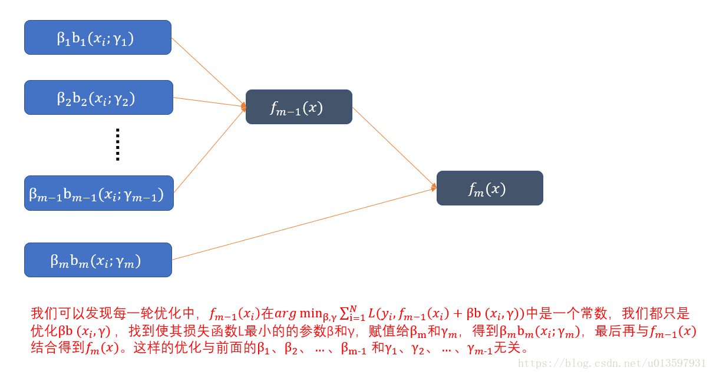
这样我们就将同时求解从 m=1 到 M 所有参数 βm 和 γm 的优化问题简化为逐次求解各个 βm，γm 的优化问题。
提升树(Boosting Tree) 其实就是采用加法模型与前向分步算法，以cart决策树为基函数的提升方法。对于分类问题决策树是二叉分类树，对于回归问题决策树是二叉回归树。
提升树的加法模型：
fM(x)=m=1∑MT(x;Θm)
其中 T(x;Θm) 表示决策树；Θm 表示决策树的参数；M 为树的个数。
提升树的前向分步算法：
fm(x)=fm−1(x)+T(x;Θm)
其中 fm−1(x) 为当前模型，通过经验风险极小化确定下一棵决策树的参数 Θm。
Θ^m=argΘmmini=1∑NL(yi,fm−1(xi)+T(xi;Θm))
其实对于解决不同问题的提升树学习算法，它们的主要区别在于使用的损失函数的不同：
| 问题类型 |
损失函数 |
方法 |
| 分类问题 |
指数损失函数 |
极小化分类误差率 |
| 回归问题 |
平方误差损失函数 |
拟合当前模型的残差 |
| 一般决策问题 |
一般损失函数 |
梯度提升(最速下降法近似方法) |
对于二类分类问题，提升树算法只需要将AdaBoost算法中的基分类器限制为二类分类树即可。
对于回归问题而言，提升树算法其实就是每次的训练数据都是上一次训练出来回归树的预测值与真实值的残差。回归问题提升树算法中，我们使用平方误差损失函数，即 L(y,f(x))=(y−f(x))2。
它的损失 L(yi,fm−1(xi)+T(xi;Θm)) 则变为 [yi−fm−1(xi)−T(xi;Θm)]2。
令 rmi=yi−fm−1(xi)，即当前模型拟合数据的残差。
则等于 [rmi−T(xi;Θm)]2；
也就是说，我们只需要简单的拟合当前模型的残差即可。
self： 这句话的意思就是说，现在是要找到当前基本模型中的参数 Θm；现在的做法是，我要找到一个模型（模型的参数 Θm），使得这个模型的预测值与上一个基本模型与与真实值的差值（也就是上一次模型的残差；书中说的是当前模型，是一回事）最小。
再进一步说就是，比如上一次模型的残差最后为 0.2，那么我这次模型的预测值最好也是 0.2 或者非常接近于 0.2，这样我们两个的差值才会最小（接近于 0）。
rmi 中 m 是第 m 个基本模型，或者说第 m 轮更新；j 是第 j 个叶结点；rmi 就代表第 m 个基本模型（第 m 轮更新）中的第 j 个叶结点。
举个例子，比如我预测一个人的身高，真实身高是1.8m，我第一次拟合是1.7m，那么第二次拟合只需要对于我第一次拟合的残差1.8-1.7=0.1m进行拟合就可以了；假设第二次拟合了0.04，那么第二次拟合的残差就为1.8-1.74=0.06；这时第三次拟合只需要对0.06进行即可。通过这样的过程我们可以发现，拟合的误差会越来越小。
补充：
关于拟合残差，举个简单的栗子：
A、B、C、D四个人的真实年龄分别为14、16、24、26，现在利用提升算法对这四个人的年龄做预测。
初始模型F0(x)取值为常数，这个常数为样本的均值时目标函数能取最小值。
所以F0(x) = 20，即A、B、C、D的预测年龄为20、20、20 、20。
所以得到每个人的年龄预测残差为 -6、-4、4、6，然后用残差数据去拟合一个基函数f1(x)，我们就可以得到一个新的模型F1(x) = F0(x) + f1(x)，其中这个基函数 f1(x) 对于残差数据的预测值为 -5、-4、3、6。
模型 F1(x) 的预测值为15(20-5)、16(20-4)、23(20+3)、26(20+6)，
所以得到每个人的年龄预测残差为 -1、0、 1 、0，然后用残差数据去拟合一个基函数f2(x)，我们就可以得到一个新的模型F2(x) = F0(x) + f1(x) + f2(x) ，其中这个基函数 f2(x) 对于残差数据的预测值为 -1、0、1、0。
此时，F2(x)已经可以完全预测准确了，它的预测结果是 14(20-5-1)、16(20-4-0)、24(20+3+1)、26(20+6+0)。
如果我们的损失函数都是平方损失函数或是指数损失函数，那么每一步优化都是很简单的，但是对于一般损失函数而言，往往每一步优化并不容易，因此对于这个问题，提出了梯度提升算法。
算法过程:
(1) 初始化 f0(x)
f0(x)=argcmini=1∑NL(yi,c)
估计使损失函数极小化的常数值c，将其赋值给 f0(x)。
(2) 对 m=1,2,...,M
① 对 i=1,2,...,N 计算
rmi=−[∂f(xi)∂L(y,f(xi))]f(x)=fm−1(x)
这里利用的是最速下降法的近似方法，利用损失函数的负梯度在当前模型的值，即：
−[∂f(xi)∂L(y,f(xi))]f(x)=fm−1(x)
当做回归问题提升树中的残差 rmi 的近似值，拟合一个回归树。
② 对 rmi 拟合一个回归树，得到第 m 棵树的叶节点区域 Rmj,j=1,2,...,J；J 为叶节点个数。
③ 对 j=1,2,...,J 计算
cmj=argcminxi∈Rmj∑L(yi,fm−1(xi)+c)
对于每个叶节点上的样本，我们求出使损失函数最小的输出值 cmj。
④ 更新 fm(x)
fm(x)=fm−1(x)+j=1∑JcmjI(x∈Rmj)
(3) 得到回归树
f^(x)=fM(x)=m=1∑Mj=1∑JcmjI(x∈Rmj)
其实无论是分类问题还是回归问题的提升树，我们都可以用损失函数的负梯度来其实无论是分类问题还是回归问题的提升树，我们都可以用损失函数的负梯度来近似残差，用作拟合数据，它们的区别只在于损失函数不同导致的负梯度的不同，近似残差，用作拟合数据，它们的区别只在于损失函数不同导致的负梯度的不同，这就是GBDT算法。
提升树是以分类树或回归树为基本分类器的提升方法。提升树被认为是统计学习中性能最好的方法之一。
提升方法实际采用加法模型（即基函数的线性组合）与前向分布算法。以决策树为基函数的提升方法称为提升树。对分类问题决策树是二叉分类树，对回归问题决策树是二叉回归树。在例 8.1 中看到的基本分类器 x<y 或 x>y，可以看作是由一个根结点直接连接两个叶结点的简单决策树，即所谓的决策树桩。提升树模型可以表示为决策树的加法模型：
fM(x)=m=1∑MT(x;θm)
其中，T(x;θm) 表示决策树，θm 为决策树的参数，M 为树的个数。
提升树算法采用前向分布算法。首先确定初始提升树 f0(x)=0，第 m 步的模型是：
fm(x)=fm−1(x)+T(x;θm)
其中，fm−1(x) 为当前模型，通过经验风险极小化确定下一棵决策树的参数 θm：
θ^m=argθmmini=1∑NL(yi,fm−1(xi)+T(xi;θm))
由于树的线性组合可以很好地拟合训练数据，即使数据中的输入与输出之间的关系很复杂。所以提升树是一个高功能的学习算法。
下面讨论对不同问题的提升树学习算法，其主要区别在于使用的损失函数不同。包括用指数损失的分类问题，用平方损失的回归问题，以及用一般损失的一般决策问题。
对于二分类问题，只需将AdaBoost的基分类器限制为二分类树即可。可以说这时的提升树算法是 AdaBoost 算法的特殊情况，这里不在细述。下面叙述回归问题的额提升树。
回归问题的提升树，将输入空间 X 划分为 J 个互不相交的区域 R1,R2,...,RJ，并且在每个区域上确定输出的常量 cj，那么树可以表示为：
T(xi;θ)=j=1∑JcjI(x∈Rj)
其中，参数 θ={(R1,c1),(R2,c2),...,(RJ,cJ),} 表示树的区域划分和各区域上的常数。J 是回归树的复杂度即叶结点个数。
回归树使用以下前向分步算法：
f0(x)fm(x)fM(x)=0=fm−1(x)+T(x;θm), m=1,2,...,M=i=1∑MT(x;θm)
在前向分步算法的第 m 步，给定当前模型 fm−1(x)，需求解：
θ^m=argθmmini=1∑NL(yi,fm−1(xi)+T(xi;θm))
得到 θ^m，即第 m 棵树的参数。
当采用平方损失函数时：
L(y,f(x))=(y−f(x))2
其损失变为：
L(y,fm−1(x)+T(x;θm))=[y−fm−1(x)−T(x;θm)]2=[r−T(x;θm)]2
这里，
r=y−fm−1(x)
是当前模型拟合数据的残差。所以，对回归问题的提升树算法来说，只需简单地拟合当前模型的残差。
这样，算法是相当简单的。现将回归问题的提升树算法叙述如下。
回归提升树算法：
输入：训练数据集T={(x1,y1),(x2,y2),⋯,(xN,yN)},xi∈X⊆Rn,yi∈Y⊆R,i=1,2,⋯,N
输出：回归提升树fM(x)
-
初始化f0(x)=0
-
对m=1,2,⋯,M
2.1 计算残差
rmi=yi−fm−1(xi),i=1,2,⋯,N
2.2 拟合残差rmi学习一个回归树，得到T(x;Θm)
2.3 更新fm=fm−1(x)+T(x;Θm)
- 得到回归提升树
fM(x)=m=1∑MT(x;Θm)
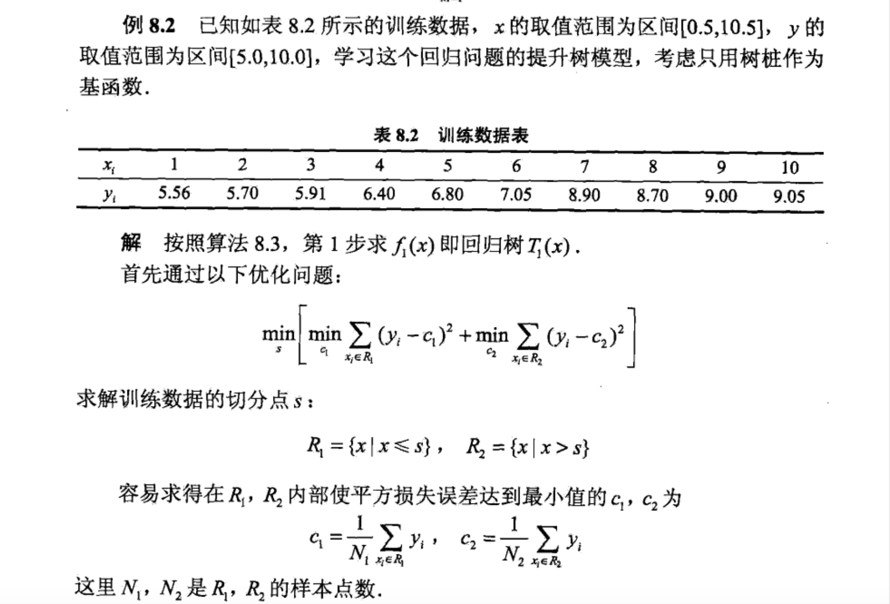
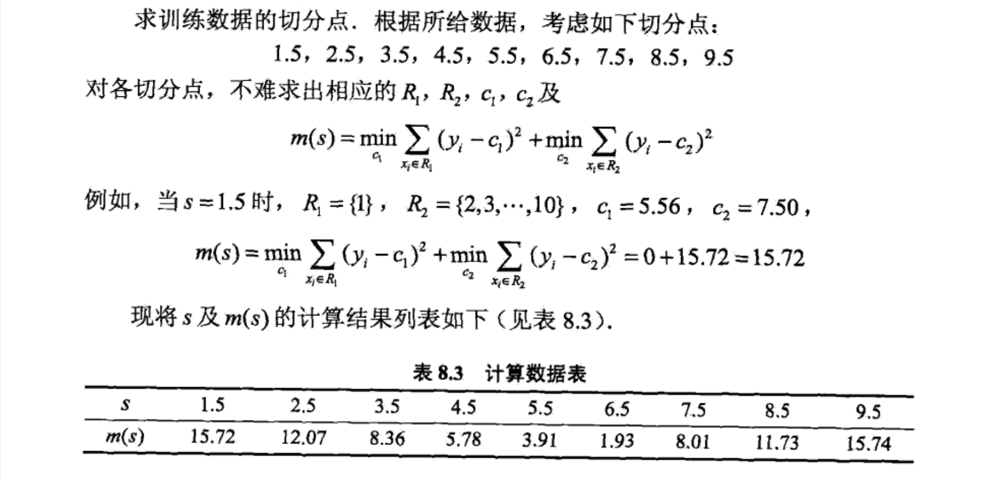
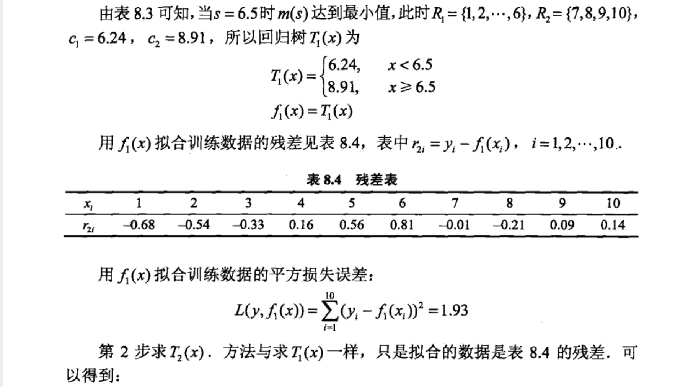
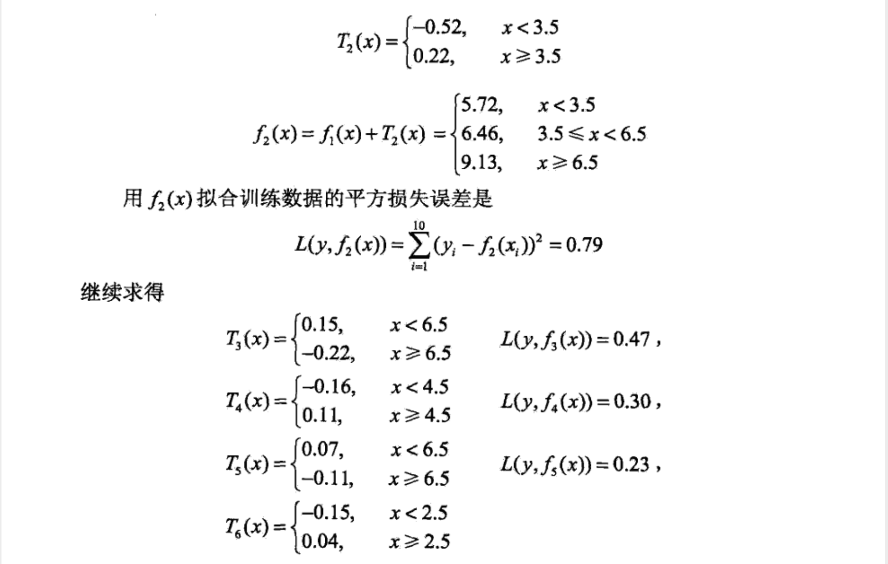
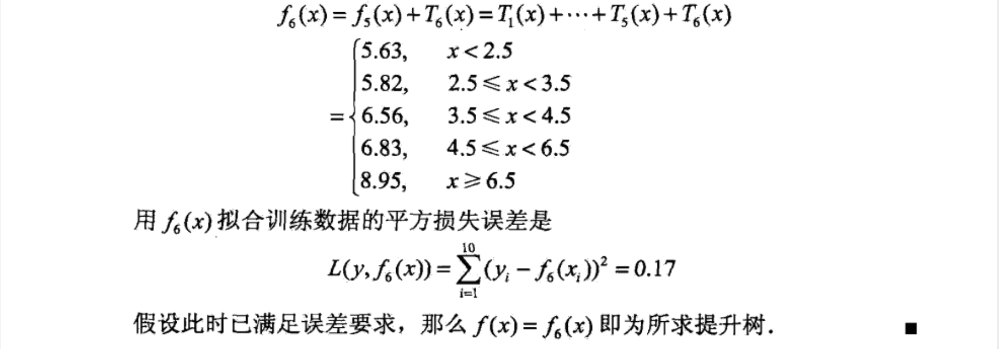
在学习该部分内容之前，建议先看一下【reference】中的【提升方法.mp4】视频中对应的该部分的内容（视频的最后一部分）。
提升树利用加法模型与前向分步算法实现学习的优化过程。当损失函数是平方损失和指数损失时，每一步优化是简单的。
但对一般损失函数而言，往往每一步优化并不容易。针对这一问题，Freidman提出了梯度提升（gradient boosting）算法。这是利用最速下降法的近似方法，其关键是利用损失函数的负梯度在当前模型的值：
−[∂f(xi)∂L(y,f(xi))]f(x)=fm−1(x)
作为回归问题提升树算法中残差的近似值，拟合一个回归树。
梯度提升算法：
输入：训练数据集T={(x1,y1),(x2,y2),⋯,(xN,yN)},xi∈X⊆Rn,yi∈Y⊆R,i=1,2,⋯,N，损失函数L(y,f(x))
输出：回归树f^(x)
- 初始化
f0(x)=argcmini=1∑NL(yi,c)
- 对m=1,2,⋯,M
2.1 对i=1,2,⋯,N计算
rmi=−[∂f(xi)∂L(yi,f(xi))]f(x)=fm−1(x)
2.2 对rmi拟合回归树，得到第m棵树的叶结点区域Rmj,j=1,2,⋯,J
2.3 对j=1,2,⋯,J计算
cmj=argcminxi∈Rmj∑L(yi,fm−1(xi)+c)
2.4 更新fm(x)=fm−1(x)+∑j=1JcmjI(x∈Rmj)
- 得到回归树
f^(x)=fM(x)=m=1∑Mj=1∑JcmjI(x∈Rmj)
算法第 1 步初始化，估计损失函数极小化的常数值，它是只有一个根结点的树。第 2.1 步计算损失函数的负梯度在当前模型的值，将它作为残差的估计。对于平方损失函数，它就是通常所说的残差；对于一般损失函数，它就是残差的近似值。第 2.2 步估计回归树叶结点区域，以拟合残差的近似值。第 2.3. 步利用线性搜索估计叶结点区域的值，使损失函数极小化。第 2.4 步更新回归树。第 3 步得到输出的最终模型 f^(x)。